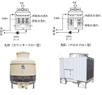

2024年
問題82 冷却塔と冷却水の維持管理に関する次の記述のうち，最も不適当なものはどれか．
（1）冷却水の強制ブローは，冷却水の濃縮防止に有効である．
（2）冷却水への薬剤処理は，適正濃度を維持するために，冷却塔への補給水量に比例した量の薬剤注入により行う．
（3）冷却塔及び冷却水は，使用開始時及び使用開始後，1か月以内ごとに1回，定期にその汚れの状況を点検する．
（4）角形（クロスフロー）冷却塔は，丸形（カウンターフロー）冷却塔と比較して空中に冷却水が飛散しやすいため，管理をより厳重にする必要がある．
（5）冷却水系統のレジオネラ届菌の増殖抑制のため，化学的洗浄と殺菌剤添加を併用する．
2024年
問題82 正解（4） 頻出度AAA
丸形（カウンターフロー：向流型）冷却塔の方が角形（クロスフロー：直交流型）冷却塔よりも冷却水が飛散しやすい（2024-82-1 図参照）．
出典 Pansonic
https://www2.panasonic.biz/jp/air/pac/build/unit_in/in16.html を基に作成
丸型，角形は，上から見た場合にそのような形状のものが多いことによる．
冷却塔の維持管理については次のとおり．
1．ビル管理法施行規則(空気調和設備に関する衛生上必要な措置)
1）冷却塔及び加湿装置に供給する水を水道法第 4 条に規定する水質基準に適合させる．
2）冷却塔及び冷却水について，当該冷却塔の使用開始時及び使用を開始した後，1 月以内ごとに 1 回，定期に，その汚れの状況を点検し，必要に応じ，その清掃及び換水等を行うこと．
3）冷却塔，冷却水の水管の清掃を，それぞれ1年以内ごとに1回，定期に行うこと．
2．冷却水の水質管理
1）冷却水中の炭酸カルシウムや水酸化マグネシウムなどの不純物は，濃度が高くなると配管や冷凍機の冷却水管の内面にスケールとなって析出し伝熱障害や腐食の原因となる．不純物による冷却水の電気伝導度の変化を連続的に測定して，補給水量を調整し，強制ブローする濃縮管理方法が普及している．併せ，防スケール・防食剤を添加すると，節水効果が得られる．
2）多機能型薬剤は，スケール防止剤，腐食防止剤，スライムコントロール剤とレジオネラ属菌の殺菌剤（又は抑制剤）を含有する．多機能型薬剤は薬注装置を使用し，連続的に注入して，その効果を発揮する．
単一機能型薬剤は，スライムコントロール・レジオネラ属菌の殺菌機能を有し，2～7日の間隔で間欠的に添加する．
腐食防止・スケール防止機能薬を別途注入するため，2液型薬剤とも呼ばれる．
パック剤は，スケール防止剤，腐食防止剤，スライムコントロール剤とレジオネラ属菌の殺菌剤を含有する錠剤等の固形剤をプラスチック等の容器に入れたもので，冷却塔の下部水槽，又は散水板に固定して，冷却水中に，薬剤が徐々に溶け出す加工がされていて，効果は1～3ヵ月間持続する．
3）冷却水系のレジオネラ属菌の増殖を抑制するには，化学的洗浄と殺菌剤添加を併用するのが望ましい．
冷却水系を化学的に殺菌洗浄するには，過酸化水素や塩素剤，有機酸などを循環させる．
レジオネラ属菌検出時の対策実施後は，菌数が検出限界未満であることを確認する．
3．冷却塔の水温が下がらない原因
1）循環水量の過大
2）風量の減少，冷却塔の設置方向と最多風向との関係不良
3）散水装置の不良，充填材の破損や劣化